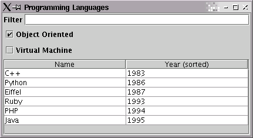

TableSorter doesn't know how to sort your table. It does a best
guess, sorting Strings alphabetically and dates chronologically. Suppose that your table
contains names like "Jesse Wilson" and "Phil O'Dell". TableSorter will sort by the entire
String rather than by surname.
Glazed Lists sorting was inspired by TableSorter. The header-clicking actions
works just as expected and the layered models is very powerful.
Creating Comparators
For our tutorial, we are going to enable the user to sort by the name or year
attributes of our ProgrammingLanguage objects. The first step is to
write a Comparator for each criteria.
import java.util.Comparator;
public class ProgrammingLanguageNameComparator implements Comparator {
public int compare(Object a, Object b) {
ProgrammingLanguage languageA = (ProgrammingLanguage)a;
ProgrammingLanguage languageB = (ProgrammingLanguage)b;
return languageA.getName().compareToIgnoreCase(languageB.getName());
}
}
|
We also implemented a similar Comparator to compare objects by year.
You will need to create a Comparator for each sorting criteria. Although
this can be tedious, it provides full control of your sort order.
Layering the SortedList
Just as we layered a filtered list between our source data and our display table,
we can add a SortedList as well. The constructor for SortedList
takes the source EventList and a Comparator to do ordering.
It is also possible to construct a SortedList without including a
Comparator argument. If you use this technique, the objects in your list
must implement the Comparable interface.
import com.odellengineeringltd.glazedlists.*;
import com.odellengineeringltd.glazedlists.jtable.*;
import javax.swing.*;
import java.awt.*;
public class ProgrammingLanguageBrowser {
BasicEventList languages;
SortedList sortedLanguages;
CaseInsensitiveFilterList filteredLanguages;
ProgrammingLanguageFilter customFilteredLanguages;
ProgrammingLanguageNameComparator sortByName = new ProgrammingLanguageNameComparator();
ProgrammingLanguageYearComparator sortByYear = new ProgrammingLanguageYearComparator();
public ProgrammingLanguageBrowser() {
languages = new BasicEventList();
languages.add(new ProgrammingLanguage("Java", "1995", "Object-oriented virtual machine language by Sun Microsystems", true, true));
languages.add(new ProgrammingLanguage("C", "1973", "The UNIX language originally developed for the PDP-11", false, false));
...
languages.add(new ProgrammingLanguage("Visual Basic", "1992", "QuickBasic with a visual UI designer", false, false));
sortedLanguages = new SortedList(languages, sortByName);
filteredLanguages = new CaseInsensitiveFilterList(sortedLanguages);
customFilteredLanguages = new ProgrammingLanguageFilter(filteredLanguages);
}
|
Also note that the SortedList was the first layered view over the
source list. This is a simple optimization - if we had done it the other way, each time
an object became un-filtered, we would need to re-sort it into the list.
Selecting Comparators
Currently we have sorted our list by name, but what if the user wants to sort by
year? We need to create a bridge from the ListTable to the
SortedList so that clicking on the table headers changes the sort
criteria. The bridge is called TableComparatorSelector, and we simply
create an instance and add Comparators as necessary.
public void display() {
ListTable listTable = new ListTable(customFilteredLanguages, new ProgrammingLanguageTableCell());
TableComparatorSelector sortSelect = new TableComparatorSelector(listTable, sortedLanguages);
sortSelect.addComparator(0, "(sorted)", sortByName);
sortSelect.addComparator(1, "(sorted)", sortByYear);
JFrame frame = new JFrame("Programming Languages");
frame.getContentPane().setLayout(new GridBagLayout());
frame.getContentPane().add(new JLabel("Filter"), new GridBagConstraints(...));
frame.getContentPane().add(filteredLanguages.getFilterEdit(), new GridBagConstraints(...));
frame.getContentPane().add(customFilteredLanguages.getObjectOrientedCheckBox(), new GridBagConstraints(...));
frame.getContentPane().add(customFilteredLanguages.getVirtualMachineCheckBox(), new GridBagConstraints(...));
frame.getContentPane().add(listTable.getTableScrollPane(), new GridBagConstraints(...));
frame.setSize(640, 480);
frame.show();
}
|
